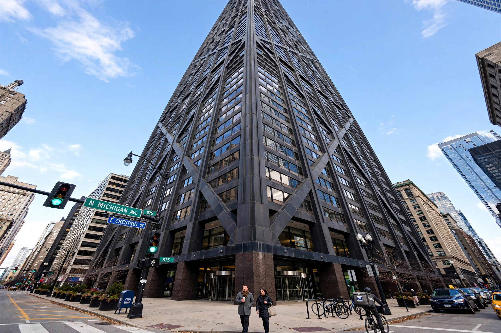

 Bruce John Graham (1925–2010) | |
| Born | December 1, 1925 La Cumbre, Valle del Cauca, Colombia |
|---|---|
| Died | March 6, 2010 (aged 84) Hobe Sound, Florida, U.S. |
| Nationality | American |
| Alma mater | University of Dayton Case School of Applied Sciences University of Pennsylvania |
| Occupation | Architect |
| Practice | Skidmore, Owings & Merrill |
| Buildings | Willis Tower (Sears Tower) John Hancock Center |
Bruce John Graham (December 1, 1925 – March 6, 2010) was a Colombian-born American architect. He was a design partner in the Chicago office of the architectural firm Skidmore, Owings & Merrill (SOM), where, in close collaboration with structural engineer Fazlur Rahman Khan, he designed two of the most celebrated skyscrapers of the twentieth century: the Willis Tower (originally the Sears Tower) in Chicago, for more than two decades the tallest building in the world, and the John Hancock Center.
Graham was born in La Cumbre, Colombia, to a Canadian father who was an international banker and a Peruvian mother. He was raised in Puerto Rico and educated in the United States. He studied at the University of Dayton and the Case School of Applied Sciences in Cleveland before earning his degree in architecture from the University of Pennsylvania in 1948. He joined Skidmore, Owings & Merrill in 1951.
Graham rose to become the head of design at SOM's Chicago office and one of the most influential American architects of the postwar era. Working with engineer Fazlur Khan, he helped develop the "bundled tube" structural system used in the Sears Tower (completed 1973) and the X-braced tube of the John Hancock Center (completed 1969). Their partnership is often cited as one of the most productive architect–engineer collaborations in modern architecture.
Beyond individual buildings, Graham was deeply involved in planning for Chicago, contributing to the city's lakefront and downtown framework plans. His work also includes the Inland Steel Building in Chicago and numerous office towers in the United States and abroad, including projects in London, Barcelona, and Hong Kong.
Graham died on March 6, 2010, in Hobe Sound, Florida, at the age of 84, of complications of Alzheimer's disease. He is remembered for reshaping the Chicago skyline and for demonstrating how structural innovation could generate new architectural form.